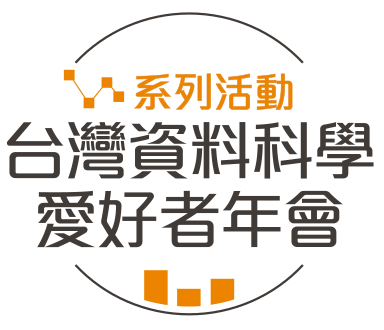
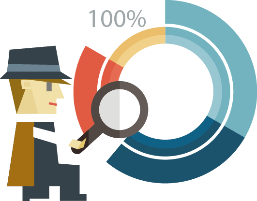
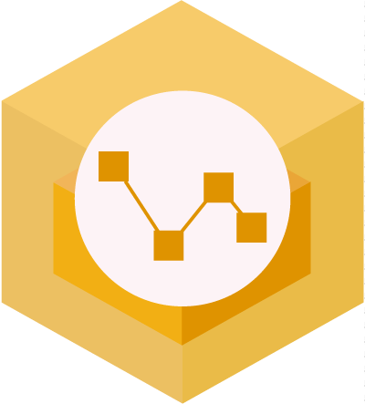

系列活動
-

-
一天搞懂深度學習 (2016/9/24)
深度學習是機器學習中近年來備受重視的一支，這堂課會簡介如何使用深度學習的工具 Keras，剖析深度學習和其它機器學習方法相比潛在的優勢，並分享深度學習的實作技巧及深度學習模型的各種變形，最後對深度學習的應用做展望。無論是從未嘗試過深度學習的新手，還是已經有一點經驗，都可以在這門課中有所收穫！ 活動介紹
-

-
用 R 輕鬆做交易策略分析及自動下單 (2016/9/24)
金融交易博大精深，許多有趣的現象也伴隨科技的進步跟著演變，過去股市名嘴喊盤，現在資料科學說話，舉凡交易策略建構、資金管裡的理論與實務，甚至老師最愛說的技術分析、K 線型態，高手最愛強調的盤感、盤感、盤感，說穿了這些都是資料科學的應用。這堂課由知名財金部落格 Bituzi 專欄作家吳牧恩 (牧清華) 與新創公司 Fintech 團隊系統顧問林佳緯聯手打造，讓資料科學教你正確的金融交易知識，同時學會用 R 語言做回測及串接 API 下單，自己分析金融資料。 活動介紹
-

-
給工程師的統計學及資料分析 123 (2016/9/4)
「統計學」，是一個大家都熟悉卻可能又陌生的名詞。做為傳統上最接近資料科學、藉由分析資料去探索事實真相的一門學問，統計學遍佈在大專院校的各個系所中，在以往是許多學生最大的惡夢之一，現在卻又在大數據的時代，被許多人宣稱統計學已死。到底什麼是統計學？統計學包含資料分析，還是資料分析包含統計學？統計學能做到什麼，又不能做到什麼？會算平均數跟標準差之後，如果懂機率學，還能多做些什麼？這門課程將由臺大資管系孔令傑助理教授主講，用一天的時間對統計學與資料分析做一個入門的介紹。時間雖短，內容雖淺，相信仍可以幫大家釐清一些概念，也讓初學者學到一些可以實戰的技術。更重要的是，這門課希望能給大家在未來繼續學習進階知識的動機與基礎。本課程由四個模組組成：1) 貓都嫌簡單的資料摘要與視覺化, 2) 假設檢定與一點都不神秘的 p 值, 3) 讓你一秒看起來像專家的迴歸分析, 及 4) 想當然爾的綜合應用與案例研討。 活動介紹
-

-
手把手教你 R 語言資料分析實務 (2016/9/4)
在此課程中將帶領對資料分析感到陌生卻又充滿興趣的您，完整地學會運用 R 語言從最初的蒐集資料、探索性分析解讀資料，並進行文字探勘，發現那些肉眼看不見、隱藏在資料底下的意義。此課程主要設計給對於 R 語言有基本認識，想要進一步熟悉實作分析的朋友們，希望在課程結束後，您能夠更熟悉 R 語言這個豐富的分析工具。透過蘋果日報慈善捐款的資料集，了解如何從頭解析網頁、熟悉 xpath 語法，撰寫爬蟲自動化收集資訊；取得資料後，能夠靈活處理資料，做清洗、整合及探索；並利用現成的套件進行文字探勘、文本解析；我們將一步步實際走一回資料分析的歷程，處理、觀察、解構資料，試著看看人們在捐款的決策過程中，究竟是什麼因素產生了影響，以及這些結果又是如何從資料中挖掘而出的呢？ 活動介紹
-
-
一天搞懂深度學習 (2016/5/21)
這門課程將由臺大電機系李宏毅教授利用短短的六個小時簡介深度學習技術。在本課程中，李教授會先帶大家熟悉深度學習的基本概念與工具，接著剖析深度學習和其它機器學習方法的潛在優勢，以及分享實作技巧及實戰經驗，希望幫助大家不只能了解深度學習，也可以有效率地上手深度學習，用在手邊的問題上。無論是從未嘗試過深度學習的新手，還是已經有一點經驗想更深入學習，都可以在這門課中有所收穫。 活動介紹
-

-
實戰 D3.js — 最熱門的互動資料視覺化技術 (2016/4/30)
D3.js 立基於網頁技術、並從設計的核心納入互動、即時等概念，可說是當代最先進的一組視覺化工具。本課程很榮幸邀請 infographics.tw 與 g0v.tw 共同發起人吳泰輝來進行 D3.js 的教學。在這堂課中，你可以學到：D3.js 資料模型的完整概念、製作動畫與變形圖表、使用 D3.js 重新解譯資料、製作熱度地圖、Circular Treemap 等進階圖表。 活動介紹
-

-
R 語言翻轉教室 (2016/4/23, 2016/4/30)
本課程很榮幸邀請到 Taiwan R User Group 的共同創辦人吳齊軒擔任講者，利用一套用 R 學 R 的教案 -- R 語言翻轉教室，來引領無程式開發經驗的學員，從實作中瞭解 R 語言的基本操作以及初階資料分析。這樣的訓練將幫助學員學會如何掌握資料的脈絡，進而輔助決策，目標是改善同學們學R語言基礎知識的體驗。 活動介紹
-

-
視訊訊號處理與深度學習應用 (2016/4/23)
本課程很榮幸邀請到陳維超博士擔任講者，課程內容集合了電腦視覺的概念簡介、多媒體資料的分類與檢索方式、深度學習於視訊資料的應用與挑戰、與加速這些技術的 GPU 平行算運算平台等，並將介紹實際的 IoT 應用例子，與實作所需之程式工具等，為理論與實務並重的安排。 活動介紹
-
資料視覺化之理論、賞析與實作 (2016/3/26)
這個課程濃縮了康教授在臺大所開設的『資料視覺化』課程的精華，總共包含賞析、理論、設計與實作四節課程。 活動介紹
- 
-
資料科學的第一堂課：心法、案例分析與團隊建立 (2016/1/30)
本活動為 1/23 資料科學面面觀加開場次。 活動介紹
-
資料科學面面觀：理論、案例及企業導入方法 (2016/1/23)
為迎接大數據的潮流，許多企業漸漸發覺到資料分析將是開啟企業創新或關鍵決策的一大契機，不少企業開始尋找資料科學家一同合作，甚至是在企業內建立資料科學團隊。但是，該去哪裡找到合適的資料科學家？資料科學家要具備什麼特質和能力？如何成功建立一個資料科學團隊？資料科學團隊與傳統的資料倉儲團隊有什麼差別？資料科學團隊在企業內扮演著什麼樣的角色？這都將是企業可能面臨到的一個又一個的問題。在此活動中，年會總召陳昇瑋博士將與聽眾分享其協助多家企業培訓資料科學家及導入資料科學團隊的各種經驗，從企業如何跳脫既有框架，進而能活用資料、挖掘出潛藏在資料中不為人知的秘密，最終打造高信任度及高效率的工作環境，展現資料分析的價值。 活動介紹
- 
-
電腦視覺一二三 (2016/1/12)
電腦視覺旨在發展演算法使得電腦能理解影像的內容，近年來電腦視覺相關的技術已廣泛應用於我們生活中，舉凡物件偵測，識別，追蹤，三維重建，多媒體分析以及檢索，監控系統，醫療影像，以及電視電影中的許多視覺效果都可以看到電腦視覺技術的應用。這場演講的目的在於介紹電腦視覺中的基本觀念和核心技術，透過大量實際的範例幫助大家快速了解這些技術如何被應用在日常生活中，以期讓聽眾有效率地了解這個領域，最新的發展以及未來展望。 活動介紹
-
Google 深度學習實作 (2015/12/29)
近年來深度學習 (Deep Learning) 在各領域舉凡圖片辨識、語音辨識、自然語言處理都有令人驚豔的突破，也逐漸在眾多機器學習演算法中展頭露角。這場演講將以實用為主軸。前半部先針對理論基礎與應用，介紹深度學習的基本概念，並講解在設計深度學習模型上需具備的理論基礎，接著介紹目前的最新發展與應用，利用成功的例子探討深度學習系統在哪些領域已被證實值得使用。後半部將專注於介紹 Google Brain 的下一代開放源碼機器學習系統 -- TensorFlow，敘述 TensorFlow 整體框架概念，介紹當中的核心元件，並以實例示範講解如何一步步建構深度學習模型的架構，設計訓練與評估的流程，針對如何使用 TensorFlow 做完整的介紹。 活動介紹
-
機器學習速遊 (Quick Tour of Machine Learning) (2015/12/12)
機器學習旨在讓電腦能由資料中累積的經驗來自我進步，近年來已廣泛應用於資料探勘、計算機視覺、自然語言處理、生物特徵識別、搜尋引擎、醫學診斷、檢測信用卡欺詐、證券市場分析、DNA序列測序、語音和手寫識別、戰略遊戲和機器人等領域。它已成為資料科學的基礎學科之一，為任何資料科學家必備的工具。這門課程將由臺大資訊工程系林軒田教授利用短短的六個小時，快速地帶大家探索機器學習的基石、介紹核心的模型及一些熱門的技法，希望幫助大家有效率而紮實地了解這個領域，以妥善地使用各式機器學習的工具。此課程適合所有希望開始運用資料的資料分析者，推薦給所有有志於資料分析領域的資料科學愛好者。 活動介紹
-
玩轉交易 (Be a Trade"R") (2015/11/14)
你想在幾歲達到財務自由？你曾經想靠投資交易致富嗎？YES！隨著科技進步，金融交易模式也跟著改變。而大數據時代的興起，更讓許多從事金融相關工作者，發展成為「金融資料科學家」。本活動將由幣圖誌專欄作家牧清華與 Taiwan R User Group 創辦人 張家齊 共同主講。課程開始由博弈角度切入，藉由模擬輪盤賭局，建立資金控管概念。我們接著實作凱利賭徒，說明博弈與交易的相同與不同。在下半場，我們開始把玩金融資料，除了介紹 R 語言相當好用的金融套件：Quantmod，我們進而探勘金融資料：猜漲跌、預測波動率、尋找相似行情。期望學員於課程結束後，擁有分析金融資料，研發交易策略等能力。 活動介紹
-
資料科學團隊培訓及導入經驗分享會 (2015/09/05)
為迎接大數據的潮流，許多企業漸漸發覺到資料分析將是開啟企業創新或關鍵決策的一大契機，不少企業開始尋找資料科學家一同合作，甚至是在企業內建立資料科學團隊。但是，該去哪裡找到合適的資料科學家？資料科學家要具備什麼特質和能力？如何成功建立一個資料科學團隊？資料科學團隊與傳統的資料倉儲團隊有什麼差別？資料科學團隊在企業內扮演著什麼樣的角色？這都將是企業可能面臨到的一個又一個的問題。在此活動中，年會總召陳昇瑋博士將與聽眾分享其協助多家企業培訓資料科學家及導入資料科學團隊的各種經驗，從企業如何跳脫既有框架，進而能活用資料、挖掘出潛藏在資料中不為人知的秘密，最終打造高信任度及高效率的工作環境，展現資料分析的價值。 活動介紹
關於年會
台灣資料科學年會由一群愛好資料科學的同好們共同舉辦，宗旨為推廣資料科學的認知、技術及應用，議題包含資料科學的各個層面，例如數理統計、資料視覺化、資料處理及計算、資料儲存以及各領域裡的資料分析應用等，期待能透過演講、資料分析上手教學課程、心得分享、資料交流等各種形式，將我們對於資料科學的熱情傳達給大眾，幫助與會聽眾瞭解資料科學的魅力，進入資料科學的領域，進而一起探索與開發資料科學的潛力，更重要是能促使將資料科學引入每個人的專業領域之中，帶來新的創新及價值。